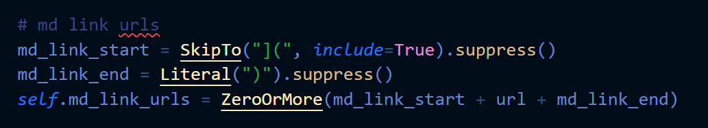

Some time after you start this coding lark you realise that half the job is either talking to databases or parsers. You end up acquiring a set of parsers without really thinking about them, one (or more) for .csv, .json and then .md, .yaml, .html, etc. and they are all great! They make your feel more and more capable as you pluck the data you actually want out of the mess of information that comes your way. And they feel like proper 'maker' tools, your long import list becomes a display of all the skills you have mastered.
So then curiosity gets you - what's going on here, could I make my own? You might read about PEG parsers and get slammed into graph theory. Oh look, Regular Expressions! The cognitive load, the amount of brain-space you need to commit for this next step is not cheap, and the pay off for your investment is far away. No wonder Google made an empire richer than ancient Rome by doing the search for people. What if there was an easier, more human way of thinking about it?
Pyparsing: Building search out of Legos, um, I mean Tokens
The Pyparsing library really feels like Lego. You have things you want to build - your search rules, and really nice, well made blocks (called 'tokens') to do it with. You click them together with a +, then run them with .parseString(some_text). Easy huh?
Lets use a few of Pyparsing's building blocks to get a feel for what they do. Say you want to skim through a markdown file to check any external hyperlinks. Our first job is to define what that a url might look like, and there is a very straightforward token to describe it with: Word. This defines what you are looking for: in our case a string that might be any combination of letters and numbers, plus a few odd characters like / and .. Its quite possible to manually specify the acceptable list, but Pyparsing has some predefined lists you can import for common tasks: alphas, alphanums and printables for growing subsets of ascii typed characters. You can add the extra characters you need very easily and exclude the ones you really don't want like single and double quotes, and Pyparsing deals intelligently with all sorts of whitespace.
from pyparsing import Word, alphanums
url_token = Word(alphaums+"/ _ - .")
Next we need to say where to look. currently url_token will match any word in our text separated by a bit of whitespace, so we need to give some clues about which words matter. We do this by creating a grammar - describing what comes just before and just after the url_token. This is where it gets a little tricky, so lets look at an actual link: [some link text](https://pyparsing-docs.readthedocs.io/en/latest/index.html) because we don't want too many 'false positives' matching against just an opening bracket is a bad idea (because we use them in other contexts), but we do want to at least capture everything that uses that syntax. Ironically I use this code on the markdown source of this page so the next code snippet is an image in order not to break my code as it tries to parse the triggers set up in the snippet...

Lets work through the tokens used:
SkipTois one of my favourite tokens - all this junk until you find the start of the link! andinclude=Trueincludes the actual url start pattern in this junk pile. By default pyparsing will return a list of what each token finds and as all this is junk we don't care about we need explicitly say that we don't want to keep the junk using thesuppress()method.Literallooks for an exact match which we are looking for as the end of our search, which again we don't want to keep, so is also markedsuppress().CaselessLiteralis sometimes handy if you want to do keyword searches.ZeroOrMoreis a nice loop function otherwise you only get the first matching pattern, or an exception if it fails to match anything.OneOrMoreworks in a similar way.
Now sadly this pattern alone does not guarantee that everything it finds is a url ready to pass off to pathlib for it to do its stuff you may need to filter your results if you need to weed out hash links that jump to specific parts of a page.